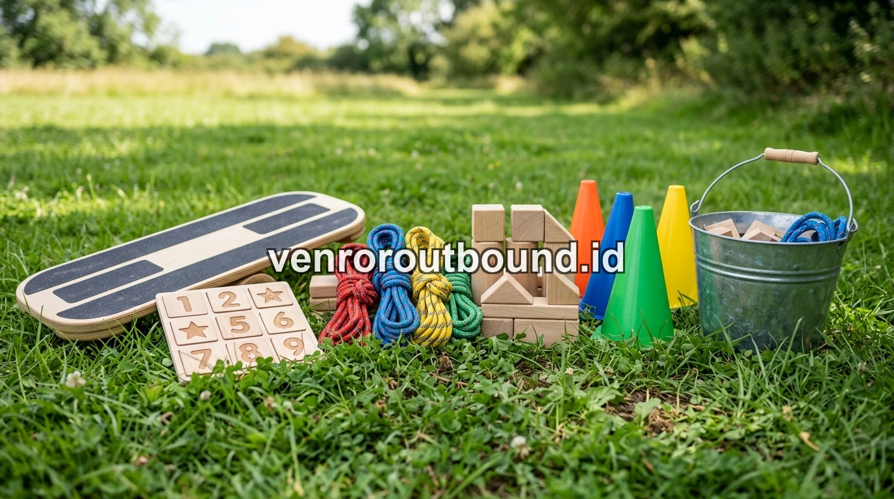

1. Apa Itu Outbound Anak Sekolah & Hakikat Edukasi Outdoor?
Outbound anak sekolah adalah metode edukasi outdoor yang terbukti melatih kemandirian, kedisiplinan, dan empati sosial sejak dini. Aktivitas ini memindahkan ruang belajar pasif ke petualangan interaktif yang melibatkan fisik, mental, dan emosi siswa secara seimbang.
Pendidikan modern di era digital saat ini menghadapi tantangan besar: tingginya ketergantungan anak terhadap layar gawai (screen time), berkurangnya aktivitas motorik fisik, dan menurunnya kebiasaan berinteraksi sosial secara langsung. Di tengah situasi tersebut, konsep Outdoor Education atau edukasi luar ruang hadir sebagai sarana penyeimbang yang esensial.
Edukasi outdoor pada hakikatnya bukan sekadar rekreasi atau jalan-jalan santai. Setiap simulasi yang dirancang—mulai dari titian tali keseimbangan, rintangan balok logika, hingga petualangan kelompok di alam terbuka—memiliki learning objective yang spesifik. Siswa tidak hanya ditantang untuk bergerak, tetapi juga diajak berpikir, bernegosiasi dengan teman sekelompok, dan menyelesaikan rintangan nyata tanpa bantuan instan dari orang tua atau guru.

Outbound Pelajar vs Class Meeting: Mana yang Lebih Efektif Bangun Karakter?
Kajian perbandingan mendalam antara turnamen olahraga sekolah dengan metode experiential learning di alam bebas.
2. Mengapa Pembelajaran Karakter Tidak Cukup Hanya di Dalam Kelas?
Di dalam ruang kelas konvensional, proses transfer ilmu umumnya berlangsung secara kognitif-teoretis. Guru menyampaikan konsep tentang gotong royong, kejujuran, dan disiplin melalui buku teks. Namun, pemahaman moral tersebut baru benar-benar teruji ketika siswa dihadapkan pada situasi nyata di lapangan:
- Mencairkan Sekat Formalitas: Di luar dinding kelas, siswa berinteraksi secara lebih lepas, jujur, dan autentik tanpa beban formalitas hierarki akademis.
- Menemukan Potensi Terpendam: Siswa yang mungkin pendiam saat ujian tulis seringkali menunjukkan kepemimpinan taktis, inisiatif luar biasa, dan kepedulian tinggi ketika kelompoknya membutuhkan arahan di lapangan.
- Stimulasi Sensorik Penuh: Udara sejuk pegunungan, aroma tanah basah, dan permukaan tanah berbatu melatih koordinasi neuromuskular dan sensomotorik anak secara optimal.

Peralatan permainan kelompok dan simulasi logika yang dirancang aman untuk melatih problem solving anak sekolah.
3. Lima Pilar Karakter Utama yang Dibentuk Melalui Outbound
Melalui kurikulum outbound pelajar terstruktur, terdapat 5 pilar karakter fundamental yang berkembang pesat pada diri peserta didik:
1. Kemandirian & Tanggung Jawab
Siswa belajar mengelola barang bawaan sendiri, menjaga kebersihan area camp, dan bertanggung jawab atas tugas yang diamanahkan dalam pos permainan.
2. Empati & Gotong Royong
Saat rekan satu regu mengalami kelelahan atau ketakutan melewati titian jembatan, siswa belajar memberikan dorongan moral dan saling membantu tanpa mencela.
3. Problem Solving & Kreativitas
Tantangan labirin tali, pipa bocor, dan transfer bola menuntut siswa mengemukakan ide secara runut, mendengarkan usulan teman, dan merumuskan taktik efisien.
4. Resiliensi & Daya Juang
Mengalami kegagalan dalam simulasi permainan mengajarkan siswa untuk tidak mudah putus asa, mengevaluasi kesalahan, dan mencoba kembali dengan semangat baru.
4. Siklus Experiential Learning & Relevansinya dengan Profil Pelajar Pancasila
Keunggulan utama edukasi luar ruang profesional terletak pada metode Experiential Learning (Belajar Berbasis Pengalaman) yang diadaptasi dari teori David Kolb. Metode ini terdiri dari 4 tahapan berkesinambungan:
- Concrete Experience (Aktivitas Lapangan): Siswa terjun langsung ke dalam simulasi games yang penuh dinamika dan tantangan fisik ringan.
- Reflective Observation (Refleksi Bersama): Di akhir pos permainan, fasilitator mengajak seluruh anggota regu duduk melingkar untuk merefleksikan proses yang baru terjadi.
- Abstract Conceptualization (Penarikan Nilai Moral): Siswa menghubungkan pengalaman simulasi tersebut dengan nilai kehidupan sehari-hari (misalnya: pentingnya kepemimpinan yang mendengarkan).
- Active Experimentation (Penerapan Konkret): Siswa mempraktikkan sikap saling menghargai dan disiplin tersebut di sekolah, keluarga, dan masyarakat.
Pendekatan ini sangat selaras dengan program Penguatan Profil Pelajar Pancasila (P5) yang diusung dalam kurikulum nasional, khususnya dimensi Mandiri, Bernalar Kritis, Bergotong Royong, dan Kreatif.

Paket Outbound Sekolah Karakter Edukatif & Terlengkap 2026
Panduan menyeluruh bagi panitia guru dan komite dalam memilih paket outbound edukasi berstandar safety tinggi.
5. Standar Keselamatan (Safety Standard) & Peran Instruktur Bersertifikat BNSP
Bagi kepala sekolah dan wali murid, faktor keselamatan anak merupakan syarat mutlak yang tidak dapat ditawar. Vendor outbound sekolah profesional menerapkan standar mitigasi risiko yang ketat:
- Instruktur Berlisensi BNSP: Fasilitator lapangan telah lulus uji kompetensi kepanduan luar ruang dan memiliki keahlian psikologi komunikasi anak.
- Rasio Pengawasan Proporsional: Memastikan setiap 10–15 siswa didampingi oleh minimal 1 fasilitator dedicated di luar guru pendamping.
- Peralatan Tersertifikasi UIAA/CE: Tali karmantel, webbing, karabiner, dan helm pelindung secara rutin diinspeksi kelayakan pakainya.
- Tim Medis & Protokol Tanggap Darurat: Ketersediaan kotak P3K lengkap di setiap pos dan skenario evakuasi cepat ke fasilitas kesehatan terdekat.
Rencanakan Outbound Edukatif Berkesan untuk Sekolah Anda
Rencanakan kegiatan outbound edukatif untuk sekolah Anda. Klik tombol WhatsApp +62 82211221909 untuk konsultasi konsep dan pemilihan lokasi terbaik di Jawa Timur.
Hubungi Kami via WhatsAppPertanyaan Sering Diajukan (FAQ)

Arby Ardiansyah
Praktisi pengembangan SDM dan perancang program experiential learning dengan pengalaman lebih dari 8 tahun memfasilitasi ratusan kegiatan outbound korporat, BUMN, dan institusi pendidikan di seluruh Jawa Timur.